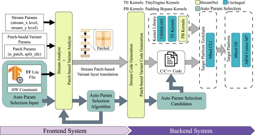

Zheng,Hong-Sheng
About Me
I'm Hong-Sheng Zheng, currently a quantum compiler engineer at Xanadu, focusing on quantum compilation technology. Prior to moving to Canada, I lived in Taiwan and worked at MediaTek as a compiler engineer specializing in AI and computer vision compiler design and optimization. I received my M.Sc. from the Department of Computer Science at National Chiao Tung University (NCTU), where I was advised by Prof. Wuu Yang.
Research Interests
- TinyML: focus on peak memory reduciton, compiler optimization
- Polyhedral Compiler: program anylsis, tiling and loop optimization
- Algo/Schedule Decoupled Compiler: Halide/TVM based schedule language and compiler design
News
- [1/2025] Our paper about multi-hierachy StreamNet inference in TinyML is accepted to TECS 2025.
- [10/2023] Our paper about memory-efficient optimiztion in TinyML is accepted to HPCA 2024.
- [9/2023] Our paper about hybrid(1D/2D) streaming approach applied on patch-based inference in TinyML is accepted to NeurIPS 2023.
Publications
-
(*Corresponding authors)
-
ACM Transactions on Embedded Computing Systems (TECS), 2025
-
High-Performance Computer Architecture (HPCA), 2024
-
Neural Information Processing Systems (NIPS), 2023
Awards
- [2020] E.SUN bank Anti-Money Laundering Competition - Our team won third place.
- [2020] Irwin Mango Defects Classification Competition - Gain honorable mention.